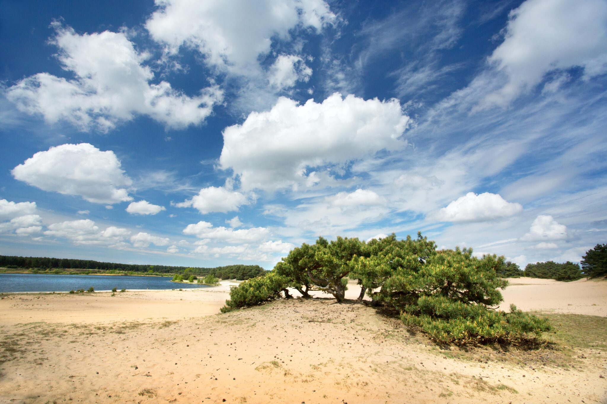

Feitjes
- Lommel is 102,4 km² groot
- Lommel telt in totaal 13 gehuchten
- in 1990 vierde Lommel zijn 1000-jarig bestaan
- De naam Lommel komt van Loemelo. Loem betekent vochtig, moerassig en Lo is woud of bos
- Het oudste café 'De kroon' bestaat al meer dan 100 jaar (anno 1898)
Lommelse Sahara
 De grote zandvlakte van de Lommelse Sahara lijkt op een miniatuurwoestijn. Maar er zijn ook helderblauwe meertjes, heidestroken en geurende naald- en loofbossen. Hier wandel je langs toffe speelelementen, de land-art kunstwerken van Will Beckers, de voetgangersbrug en de befaamde uitkijktoren!
Glazen huis
Glazenhuis is een modern glazen paviljoen waar het gloeit van de creativiteit. In het glasatelier blazen glaskunstenaars, designers en studenten bijna dagelijks hun ideeën leven in. Bewonder, beleef en blaas uit.